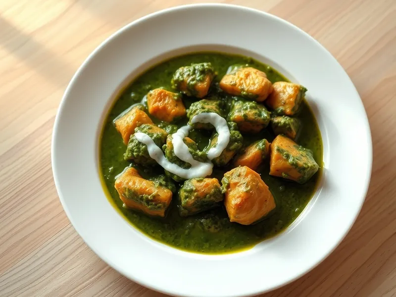

Курица со шпинатом по-индийски (палак чикен)
Курица в густом ярко-зелёном соусе из шпината с имбирём и карри
30 мин3 порц.348 ккал на порциюБ 44 · Ж 15 · У 11Интернациональная кухня
Открыть в приложении: порции, таймеры, список покупок
Продукты на 3 порц.
- Куриное филе500 г
- Шпинат300 г
- Лук репчатый1 шт
- Чеснок2 зуб.
- Имбирь10 г
- Помидоры1 шт
- Карри (приправа)2 ч. л.
- Сливки 20%3 ст. л.
- Растительное масло2 ст. л.
- Вода50 мл
- Сольпо вкусу
Как готовить
- Свежий шпинат опустите в кипящую воду на 1 минуту и откиньте на дуршлаг. Замороженный просто разморозьте.
- Измельчите шпинат блендером в пюре вместе с водой.
- Нарежьте филе кубиками 2-3 см, посолите и обжарьте в половине масла на сильном огне 5 минут до светлой корочки. Переложите на тарелку.
- В оставшемся масле обжарьте мелко нарезанный лук на среднем огне 4 минуты. Добавьте натёртые чеснок и имбирь, карри и жарьте 1 минуту.
- Добавьте нарезанный помидор и тушите 3 минуты, пока он не размякнет.
- Вмешайте шпинатное пюре и курицу и тушите на слабом огне 5 минут. Влейте сливки и прогрейте 1 минуту. Курица готова, когда на разрезе белая, а сок прозрачный.
Совет. Сразу после бланширования облейте шпинат холодной водой: так соус останется ярко-зелёным, а не бурым.